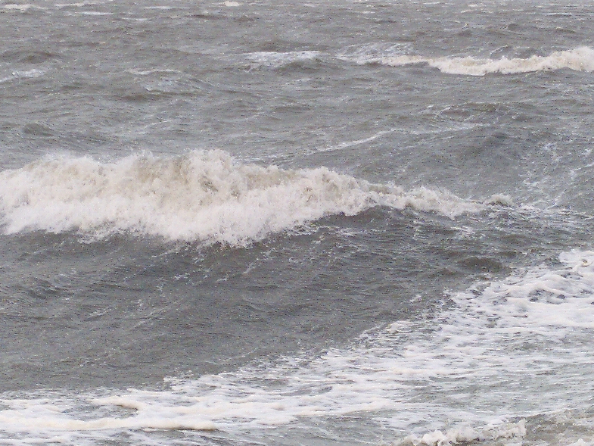
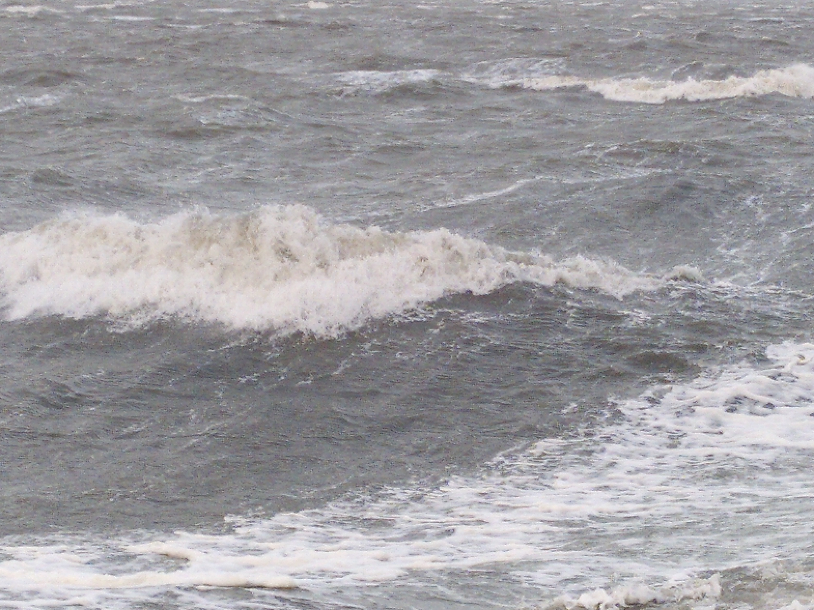

Welkom!
Mooi! Ik heb nu een website. Een eigen stukje internet waar ik in principe al mijn creativiteit kwijt kan. Dat biedt mogelijkheden om iets ontzettend moois te maken. Ik ben aan weinig kaders gebonden en kan beginnen met een meesterlijk stukje code te schrijven. Zeker als IT'er móét je wel iets indrukwekkends kunnen schrijven ... Maar wat?
allersma.be. Dus je bent een belg?
Laat ik beginnen met maar wat te vertellen over de geschiedenis van deze website. Het is 2016 en ik ben een Informatica student met weinig geld die net allemaal wonderlijke dingen over het internet heeft geleerd. Tijd om die theorie in de praktijk te brengen! Ik wil een website voor mijzelf, dus het moet een persoonlijke naam hebben. Zal ik het domein allersma.nl reserveren? Helaas. Al bezet door iemand die... ...een experimentele keuze voor UI/UX voor zijn website heeft gemaakt. Nou, dan maar op zoek naar een goedkoop alternatief. Blijkbaar is allersma.be nog beschikbaar. En het is ook nog betaalbaar. En mocht ik berichten krijgen van .be registry, dan kan ik het in ieder geval lezen zonder dat ik het eerst hoef te vertalen. En dat was de geboorte van allersma.be!
Waarom is de website zo... kaal?
'Less is more'. Dat kan je tot in de extremen nemen. En dit is wel heel less. Maar dat geldt ook voor de inhoud. Ik begon dit verhaal met wat ik er eigenlijk neer moet zetten. En dat weet ik nog steeds niet zo goed. Dus het lijkt mij zinvoller om eerst de functie te bedenken, dan de vorm. Mocht ik met een briljante ingeving komen, dan zal ik dat uploaden. Maar voor nu laat ik het zo. Over 'more' gesproken: als je op je smartphone zit te kijken terwijl hij verticaal staat (in portrait mode), draai je telefoon dan een kwartslag. Dan zie je ook nog meer plaatjes aan de boven- en onderkant van deze pagina.
Wat gaat er nog komen?
Goede vraag. Websites zijn een beetje als projecten zonder einddatum. Ze groeien mee met de maker, veranderen van vorm, stijl en doel. Ze kunnen uitgroeien tot een technisch hoogstandje, een bron van informatie of tool met een belangrijk doel. Rome is niet in één dag gemaakt. Dus dat kan je van zo'n creatief en technisch genie als ik ook niet verwachten.